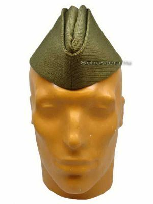
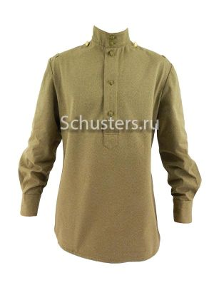
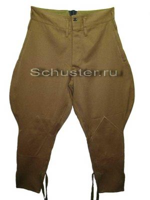
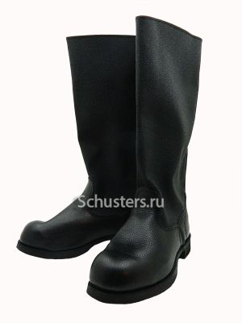
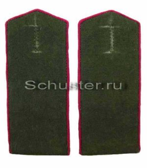
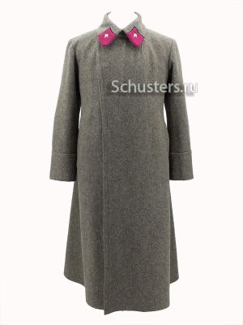

Pilotka Obr. 35
1935-ös mintájú, legénységi piotka
8000Ft
Gimnasteka Obr. 43
1943-as mintájú, legénységi zubony
18000Ft
Sharovary Obr. 35
1935-ös mintájú, legénységi bricsesznadrág
15000Ft
Kirza Sapogi
Legénységi kirza csizma
25000Ft
Pogony Obr. 43 (Infantry)
1943-as mintájú, lövész vállap
4000Ft
Shinel Obr. 35
1935-ös mintájú, legénységi kabát
50000Ft